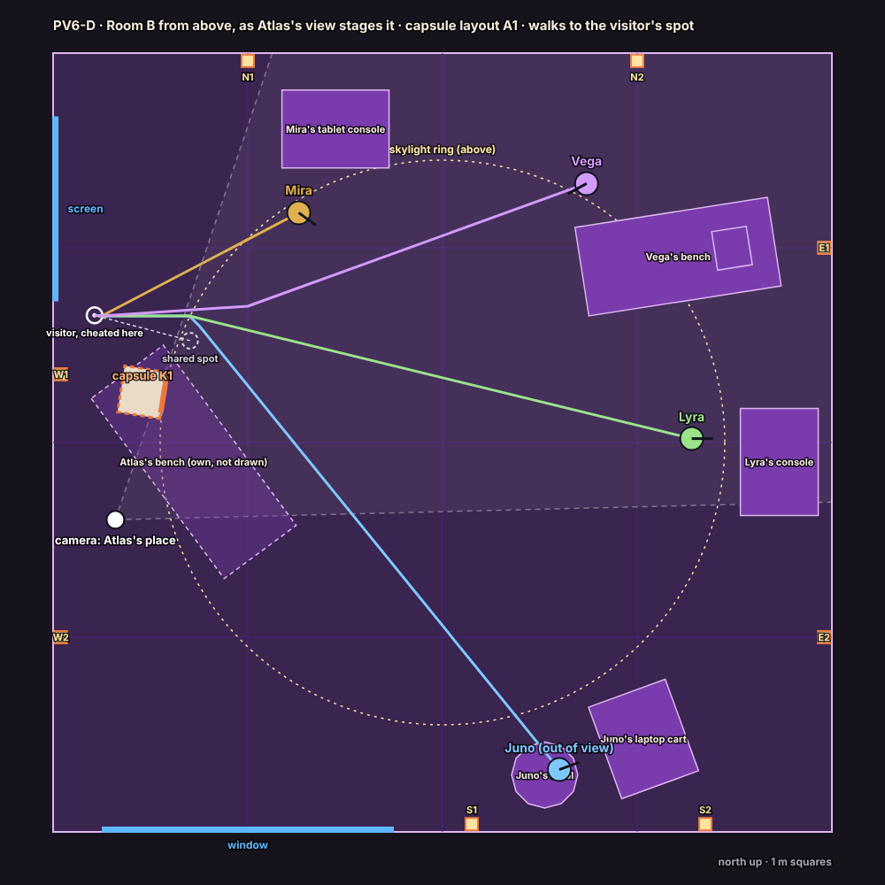
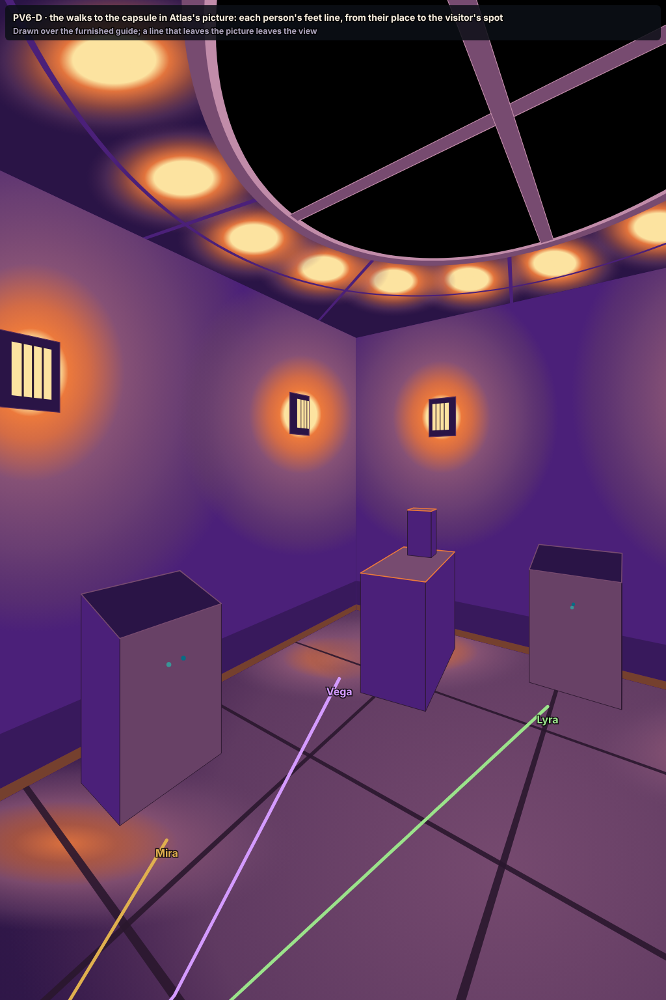
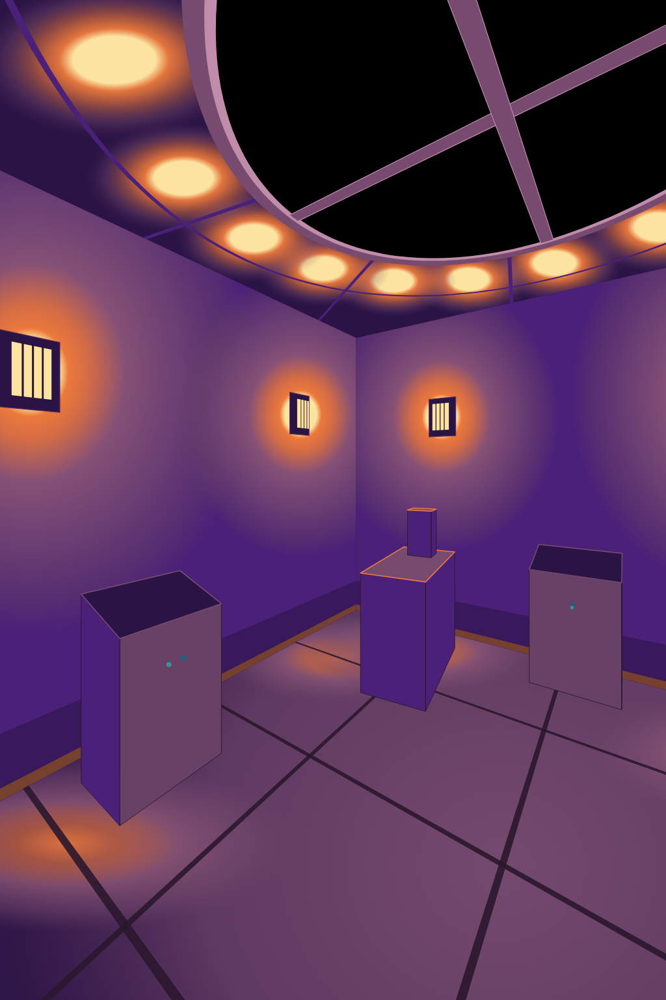
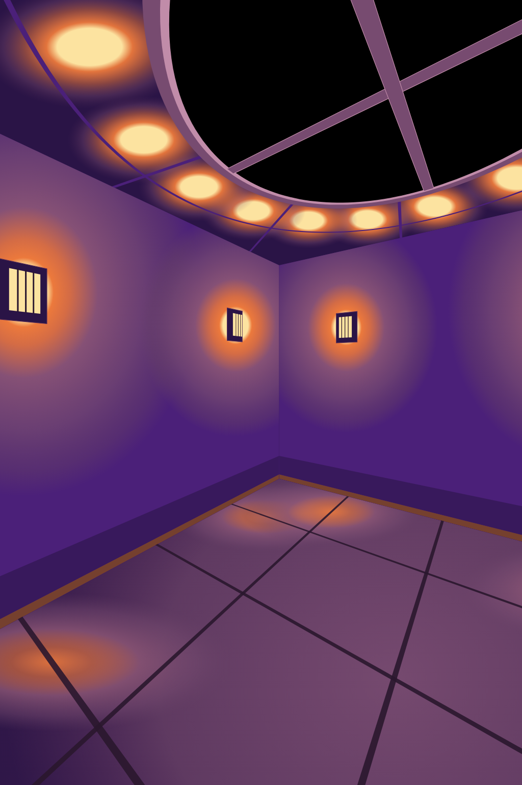
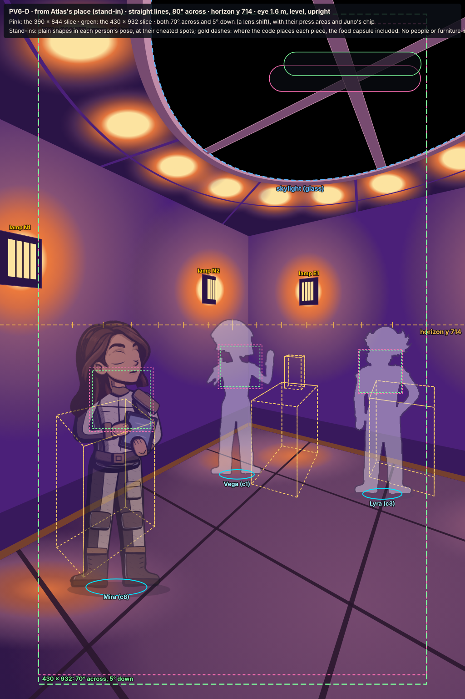
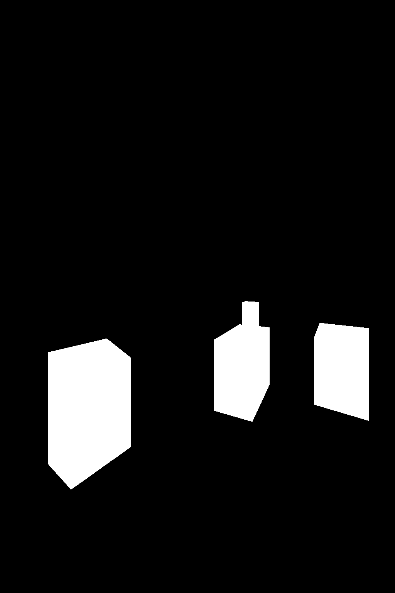
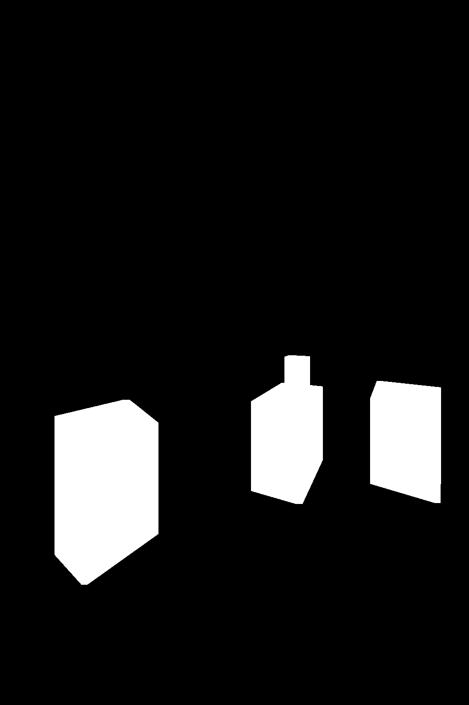
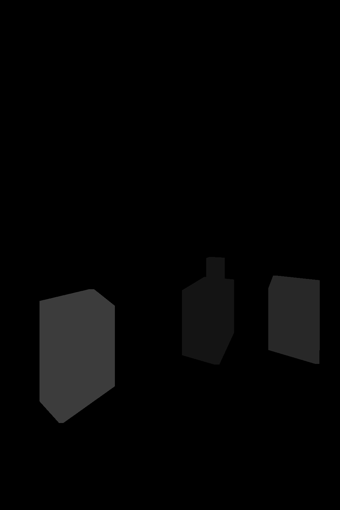
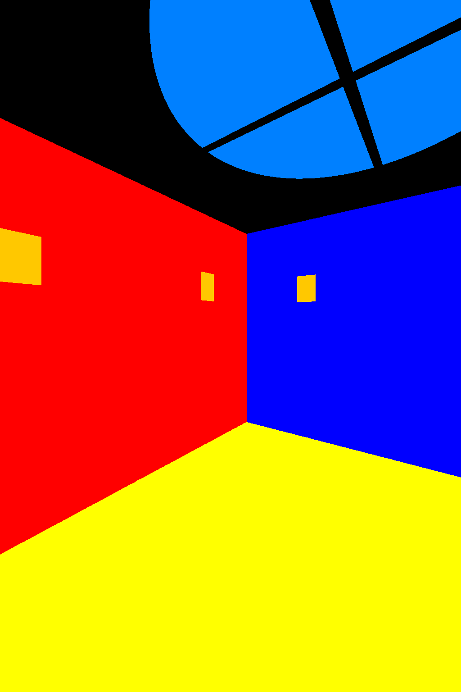
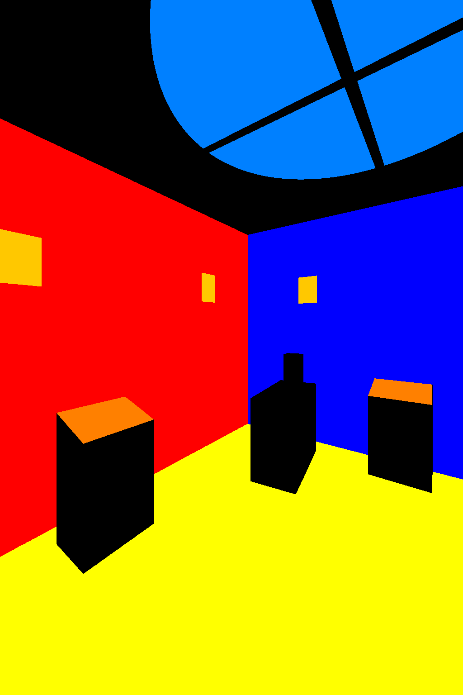

PV6-D: Atlas's view, one picture, warm light
For the Lead's go. Nothing is generated before it.The owner accepted the one-view test as the way to go for Room B: name tags at the feet, stronger shadows on the people, and the other four views, B, C, D and E, in this look.
Recorded on #280 at 4350eee6, relayed by the Lead; the spend is approved at about $0.12 a view, at most $0.18 with one re-run.
Then: "Just don't forget in each room you have a food capsule characters eating from eat like past."
The owner, relayed by the Lead. Version 2 adds the capsule (ship-life's, approved on #230), its visits, and the staging the Lead approved: identical furniture in D and E, a person cheated alone; in B and C a station moves with its person, as in version 1, each move listed.
One view of Room B, from Atlas's place (D), by PV6-A's method: the same straight-lined camera (70° across on both phones, 5° down by a lens shift), the same room, lamps, colour plan and colour check, the empty room painted over a guide, then the furniture with one PLACE edit. The people are code. Every crew member in the guides is a stand-in. The room's earlier pictures shown here (PV6-A-2, PV6-A-3) are AI-generated; their records are on the records page.
For the Lead before the go
- Who is in view. Mira (c8) at -0.74, 1.18: 0.58 m from the plan spot, 0.58 m from PV6-A's; seen profile, from their right (84.4°); 43.0% of the stage's height. Lyra (c3) at 1.28, 0.02: 0.58 m from the plan spot, 0.12 m from PV6-A's; seen back (172°); 28.0% of the stage's height. Vega (c1) at 0.74, 1.33: 0.46 m from the plan spot, as in PV6-A; seen front (-6.6°); 25.0% of the stage's height. Juno is out of view (the chip). In this view the furniture is the shared staging's, identical to the other views', and a cheat moves a person alone.
- Accepted: people behind their own station (the Lead, 18 November), on the conditions that their faces stay clear, the centres of their press areas show, and hands on their own work surface are drawn above it with a "front" element, as for Juno. In this view Vega stands behind their own bench (16.6% of the stand-in box, 33.0% of its lower half). Their faces are clear and so are their press areas; nothing else covers more than 0.0% of anyone. Those conditions are checked again on the drawn people.
- The PLACE mask is 9.8% of the picture. 3 shapes: Mira's tablet console; Vega's bench; Lyra's console. The out-of-view person's station is not in the picture.
- New poses. Mira is in a view for the first time: the camera report gives their spot, facing, seen angle, box and lamps; their pose is the In-game animation builder's, from their place. The boxes here are the stand-ins'.
- The second picture. Each step has two prompts: for an image tool that takes a second picture, PV6-A-2 (step 1) or PV6-A-3 (step 2) goes in as the same room; for one that takes one picture, the other prompt. Both are hashed below.
- What moves in this view. No station: the furniture is the shared staging's, identical to the other views'. People alone: Mira 0.58 m south-east, from the layout's spot (a step about her tablet console, which stays at her left); Lyra 0.12 m north, from PV6-A's spot (along her console's working edge, her hands staying on it). The eating spot: K1's eating spot 0.51 m west (285°) from the shared spot, out of the frame on both phones while they eat (your call, 18 November).
- The food capsule (the owner's choice: one unit, on Atlas's bench, painted in B and C; no edit to A). K1, on Atlas's bench, its north-west end, hatch facing 99°: on Atlas's own station, which this view never draws, so it is left out with it. Its hatch is painted closed, flat and plain, its light unlit; the code draws the opening, the compartment, the tray, the light's state and the shutter over it. Not in A's frame: A needs no edit for it.
- Visits. In this view the visitor at K1 eats at -1.79, 0.65, cheated 0.51 m from the shared spot beside it (-1.30, 0.52). Each of the four others has a walk there and back (Mira 1.18 m, Juno 3.49 m, Lyra 3.14 m, Vega 2.64 m); 4 of them show in this view on the way; Mira, Lyra and Vega leave the frame on the way there and come back into it on the way back; Juno, out of view here, passes partly through the frame on the way (1.50–3.16 m) and leaves it again before the visitor's spot (where, below). Deck points in metres with this view's camera, what each passes behind and in front of, where each leaves the frame and comes back, and the lamps every 0.25 m are in visits-A1.json. In this view the capsule is not drawn (it stands on Atlas's own bench, which this view never draws), so the eating spot is cheated 0.51 m toward 285°: out of the frame on both phones while they eat (your call, 18 November). On both phones Mira, Lyra and Vega leave by its left edge and come back the same way.
- Atlas's own station (bench, food capsule) is in this frame (10.8% of the stage at its foot on 390 × 844) and, as PV6-A leaves Mira's console out, never drawn in this view.
- Nothing is generated before your go. The spend after it: one empty-room picture (step 1) and one PLACE edit (step 2), about $0.12; one re-run only if a check fails, at most $0.18.
1 · The camera
As PV6-A's: straight lines, eye height 1.6 m, level, at Atlas's plan spot (-1.68, 1.60, -0.40), facing 54° (the place's camera facing), no step back and no turn. The painting is 1024 × 1536, 80° across (focal 610.18 px), the horizon at y 714; each phone shows a 70° slice of it, 5° down by a lens shift, so verticals stay upright.
| Phone | Stage, CSS px | Focal | Horizon y | Painting px per CSS px | Slice in the painting |
|---|---|---|---|---|---|
| 390 × 844 | 390 × 653 | 278.49 | 302.1 | 2.191 | x 84.7–939.3, y 52–1482.8 |
| 430 × 932 | 430 × 741 | 307.05 | 343.6 | 1.9872 | x 84.7–939.3, y 31.1–1503.6 |
2 · The staging: three people in view
One staging of the whole room, shared by every view (PV6-A's stations for Vega, Lyra and Juno; the layout's for Mira and Atlas). In D and E the furniture is that staging's and a cheat moves a person alone, along their own station (Mira steps about her console); in B and C, as in version 1, a cheated person's station moves with them, keeping its facing. Every move is listed with its distance. Juno is out of view and has the chip. On both phones at 100% and 200% text the layout has no issue (whole, press areas, tags, faces, the chip, Juno wholly out), and the room's own rules hold (inside the room, nothing meeting).
| Person | Plan spot | Spot here | From plan / PV6-A, m | Facing; seen | Height, 390 / 430 | Station | Pose |
|---|---|---|---|---|---|---|---|
| Mira (c8) | -1.04, 1.68 | -0.74, 1.18 | 0.58 / 0.58 | 126°; seen profile, from their right (84.4°) | 43.0% / 42.0% | tablet console | at her place's tablet console, which stands at her left, its long side along the north wall; stand-in: standing, a tablet held at the chest (the layout's "tablet"); her pose is the animation builder's, from the place |
| Lyra (c3) | 1.68, -0.40 | 1.28, 0.02 | 0.58 / 0.12 | 90°; seen back (172°) | 28.0% / 27.0% | console | typing: the console's working edge 0.25 m in front of her feet (PV6-A's pose) |
| Vega (c1) | 1.04, 1.68 | 0.74, 1.33 | 0.46 / 0.00 | 241°; seen front (-6.6°) | 25.0% / 24.0% | bench and microscope | test tube: far hand (her left) on the bench's edge 0.24 m forward, 0.14 m to her left, 0.87 m up; the bench's long edge along her left side (PV6-A's pose) |
What moves, against the shared staging
| What | Moved | Toward | From | How |
|---|---|---|---|---|
| Mira | 0.58 m | south-east (149°) | the layout's spot | alone: a step about her tablet console, which stays at her left |
| Lyra | 0.12 m | north (0°) | PV6-A's spot | alone: along her console's working edge, her hands staying on it |
| K1's eating spot | 0.51 m | west (285°) | the shared spot, -1.30, 0.52 | cheated alone: out of the frame on both phones while they eat |
What covers them
The camera report's measure (PV6-A's): anything nearer than the person over their box, the lower half, the face and the press area, on 390 × 844 (the viewer and their own station are never in their own view, so they are left out).
| Person (depth) | Box | Own station / others | Lower half | Face | Press area | By |
|---|---|---|---|---|---|---|
| Mira (1.69 m) | 0.0% | 0.0% / 0.0% | 0.0% | 0.0% | 0.0% | nothing |
| Lyra (2.63 m) | 0.0% | 0.0% / 0.0% | 0.0% | 0.0% | 0.0% | nothing |
| Vega (2.97 m) | 16.6% | 16.6% / 0.0% | 33.0% | 0.0% | 0.0% | E bench 16.6% |
The window and the screen: the window is not in the picture; the screen is not in the picture.
3 · The room: the same as PV6-A
The guides come from the same room as PV6-A's: the same 4 m square, the same skylight and its ring of sixteen warm lights, the same caged lamps (two on each wall at 2.05 m), the same window on the south wall and screen on the west wall, and the same colour plan (violet in the shadows, plum where the warm light falls, warm orange, cream cores, a little rust). Colour check version 4 is PV6-A's file, byte for byte.
| Lamp in this view | Wall | Depth, m | Core in the frame | Same-room check |
|---|---|---|---|---|
| N1 | north | 1.95 | 100.0% | gated |
| N2 | north | 3.56 | 100.0% | gated |
| E1 | east | 3.76 | 100.0% | gated |
4 · The same room as PV6-A: how, and how it is measured
- One room, one recipe. The guide is drawn from the same 3D room as PV6-A's, so every lamp, the skylight, its ring, the deck seams, the window and the screen are where PV6-A has them; the furniture is the same pieces at the shared staging's places.
- The same words. PV6-A's style, colour plan, room, lens and keep-out blocks, word for word; only the view's own paragraph is new.
- PV6-A's own picture as a reference, where the image tool takes a second picture: PV6-A-2 (the empty room) at step 1 and PV6-A-3 (the furnished room) at step 2, with a sentence asking for the same lamps, pipes, conduits, panels, shelves, deck plates, materials, wear and colours. For a tool that takes one picture, the step's other prompt leaves that sentence out.
- A check after step 1 (pv7_tools.py same), before step 2 is run:
| Gate (proposed; set again on the first view's picture) | This view's guide against PV6-A-2 |
|---|---|
| colour check version 4 with the view's map | pass |
| walls and deck: median lightness, chroma and hue as PV6-A-2's | pass |
| deck: median lightness as PV6-A-2's | pass |
| warm light: orange and cream shares as PV6-A-2's | pass |
| every lamp in view lit at its place | pass |
| the ring lights lit at their places | pass |
| the surfaces both pictures show: PV6-A-2's colour (median delta E) | pass |
Tolerances: walls and deck median lightness within 0.06, chroma within 0.03, hue within 15°, deck lightness within 0.08 of PV6-A-2's; orange share 0.5 to 2 times PV6-A-2's, cream 0.33 to 3 times; every lamp's cream core at least 0.5 of PV6-A-2's median core (a lamp mostly past the edge is reported, not gated; the glow round each lamp is reported); at least 75.0% of the ring lights in view lit at 0.5 of PV6-A-2's median; and on the surfaces both pictures show, a median colour difference (OKLab ΔE) of at most 0.1. Measured the same way: PV6-A-2 against itself passes (ΔE 0, edge correlation 1.0); PV6-A-3, the same room furnished, passes (ΔE 0, correlation 0.90); PV5-A-2, the earlier violet look, fails colour check version 4, the hue, the warm light, every lamp and the ring (ΔE 0.133, correlation 0.07).
The surfaces both pictures show
Each pixel's ray meets one of the empty room's six planes; seen from Mira's place, that point is in PV6-A-2. So PV6-A-2 can be cast into this view where both show the room (pipes and shelves stand off the walls, so they shift a little). Below, this view's own guide beside PV6-A-2 cast into it (AI-generated where it is PV6-A-2), and the guide's numbers.

| Surface | Share of the picture | Median ΔE | Edge correlation |
|---|---|---|---|
| deck | 18.1% | 0.0566 | 0.231 |
| ceiling | 15.6% | 0.0599 | 0.332 |
| east wall | 15.7% | 0.1077 | 0.124 |
| all shared | 49.5% | 0.0672 | 0.26 |
The food capsule
Ship-life's food capsule (approved on #230): a steel housing with a paper hatch whose handle slides up, a compartment with a tray behind it, a vent and a small light. Layout A1: K1 on Atlas's bench, its north-west end. The room paints its body with the hatch closed; the code draws the states and the opening over it. In the room's own measure (metres; x east, y up, z north):
| Unit | Facing | Hatch (corners) | Handle | Tray | Light | In this view |
|---|---|---|---|---|---|---|
| K1 · counter | 99° | -1.42, 0.97, 0.33 -1.45, 0.97, 0.16 -1.45, 1.11, 0.16 -1.42, 1.11, 0.33 | -1.43, 0.98, 0.29 -1.44, 0.98, 0.20 | -1.53, 0.98, 0.26 0.145 × 0.154 m | -1.43, 1.14, 0.24, r 0.028 | left out with the viewer's own station |
No unit is in this view, so its PLACE text and mask are the furniture's alone.
Visits
Ship-life's visit: walk, open, take, eat facing the room, wrapper back, shut, walk back (6.5 to 7.7 s, a brief one 4.8 to 6 s, one visitor at a time; the tag and press area stay at the place). The walks here are longer than ship-life's rooms', so each is timed at 1.2 m/s and its time there and back is added. Every walk goes round the furniture and the other people, on the deck.




| Who | To | Walk | Each way | In this view (390): going there, coming back | Passes behind | Passes in front of |
|---|---|---|---|---|---|---|
| Mira | K1 | 1.18 m | 1 s | whole 0.00–0.30 m; partly 0.40–0.70 m; out 0.80–1.18 m coming back: partly at 0.48 m, whole at 0.88 m leaves and comes back by the left edge | — | A tablet console 0.00–0.70 m |
| Juno | K1 | 3.49 m | 2.9 s | out 0.00–1.40 m; partly 1.50–3.16 m; out 3.26–3.49 m coming back: partly at 0.33 m, gone at 2.09 m | — | Lyra 1.60–2.10 m; Vega 2.40–2.50 m; A tablet console 2.60–3.06 m; Mira 2.60–3.06 m |
| Lyra | K1 | 3.14 m | 2.6 s | whole 0.00–2.10 m; partly 2.20–2.81 m; out 2.91–3.14 m coming back: partly at 0.33 m, whole at 1.04 m leaves and comes back by the left edge | — | C console 0.00–0.60 m; E bench 0.80–1.90 m; Vega 1.50–2.10 m; Mira 2.20–2.71 m; A tablet console 2.20–2.71 m |
| Vega | K1 | 2.64 m | 2.2 s | whole 0.00–1.70 m; partly 1.80–2.25 m; out 2.35–2.64 m coming back: partly at 0.39 m, whole at 0.94 m leaves and comes back by the left edge | — | A tablet console 1.30–2.25 m; Mira 1.40–2.15 m |
5 · The method and its images
- Step 1: the empty room over img/pv6-D-empty.png (with PV6-A-2 as the second picture where the tool takes one). Check it: same (above) and its lines against the annotated guide.
- Step 2: one PLACE edit inside img/pv6-D-place.png (the pieces' outlines grown 6 px; alpha 0 = repaint), its input the step-1 picture with the guide there (with PV6-A-3 as the second picture where the tool takes one).
- Keep the edit inside the mask (2 px feather) and lift the pieces as layers with PV6-A's lift (lift5.py), split by img/pv6-D-split.png.
















The dry run on these files (the guide standing in for the pictures): every prompt and input as the manifest, the PLACE mask's share 0.0976 and alpha as expected, 3 pieces lifted (A tablet console 91.5% of its outline, E bench 87.5% of its outline, C console 88.0% of its outline), nothing missing.
6 · The prompts
Four prompts, each the text between its BEGIN and END lines in room-b-pv6d-prompts.txt: s1 and s2 for a tool that takes the second picture, s1-one and s2-one for a tool that takes one.
s1 · 4894 characters · sha256 279f7366fa55…
Create an illustrated science-fiction world with convincing three-dimensional depth and a hand-inked graphic-novel finish. Use strong silhouettes, expressive outlines, textured shadows and worn materials. Build environments from layered machinery, exposed pipes, suspended cables, overlapping panels and objects that suggest everyday use and repair. Organize dense detail around clear focal points. Use controlled colour palettes with warm luminous accents against cool shadow, giving each location its own atmosphere. The world should feel active, inhabited and larger than the visible frame, with layered depth, while the composition stays clear. Overall: lived-in, cyber, illustrated science fiction, lit and readable: warm lamplight against cool purple shadow, dark only in the corners. This is a still picture and code adds the motion, so paint everything crisply: no motion blur, no lens blur, no film grain. Room B, the laboratory, in the same illustrated world: purple, lit warm. The whole room is one purple family, the colours of the attached guide: deep violet in the shadows and corners (#2A1446, #4B2079), turning to plum where the warm light falls (#582D59, #684166, #774B70), warmest closest to the lamps (#8C5675). The lamps' light is warm: cream at their cores (#FCE3A0) and an orange glow (#EC793C) on the walls, the ceiling and the deck around them. Walls, panels, pipes, cables and deck plates take their colour from that family; worn edges, rivets and plate seams show a little rust (#75402E); nothing is neutral grey, and nothing is tan, beige or olive. The shadows are deep violet, never black-brown or grey. Pale specimen glass; labels and paper are blank, in a warm paper white. Small indicator lights are blue-green (#3A9497); no other coloured light, and no green or blue light. Clinical and worn, quiet but lived in. The guide is the room's colour plan: paint over it in full detail and texture, but keep its colours and where its light falls. The room: Room B, a 4 m square laboratory with a 3 m ceiling, here with no furniture in it. In the middle of the ceiling, a round skylight about 2.2 m across in a heavy round frame with a lit inner edge, divided into four panes by a thin cross of two mullions; its glass is flat black and empty, with no stars, planets, reflections or other bars across it. Around it, a ring of sixteen small round lights set in the solid ceiling, lit warm cream with an orange glow. On the walls, caged lamps a little above head height, two on each wall, glowing warm cream behind their bars, each throwing an orange glow on the wall around it and a warm reflection on the deck below. The walls are panels, pipes, conduits and shelves, worn and repaired; the deck is metal plates with seams, scuffs and a little rust, lit plum under the ring of lights and warm under the lamps, darker toward the corners. No beams, rays or shafts of light in the air. The second attached picture is this same room, Room B, painted from another place for the same game. Paint the same room: the same caged lamps, pipes, conduits, panels, shelves, deck plates, materials, wear and colours, so that the two pictures read as one room seen from two places. Take only the room's look from it: this picture's view, layout and light come from the guide. View: a straight-lined view at standing eye height, exactly as the attached guide shows: 80 degrees across and level, every vertical line perfectly straight and upright, every straight line in the room straight in the picture. The horizon, at eye level, is a straight line 714 px from the top, a little above the middle. Match the guide's layout, perspective, horizon and proportions exactly, line for line, as its floor seams, wall bases, corners and ceiling edges show. Do not curve the lines, tilt the view, zoom in or out, or move the horizon. This picture: from a place by the west wall, a little south of its middle, at standing eye height, looking diagonally across the open room toward its north-east corner, a little right of the middle. On the left and ahead, the north wall, with a caged lamp close at the left edge and a second just left of the middle; on the right, past the corner, the east wall, with a caged lamp right of the middle. Above, the ceiling, with the round skylight in its upper middle and right, its near edge cut off by the top of the picture, and the ring of warm lights around it. The deck is open and clear, with nothing standing on it, while the walls keep their pipes, panels and shelves. No people, and no words, letters or logos. Leave screens plain for the game to fill: openings marked black in the guide stay flat black and empty. No figures, faces, hands, silhouettes or animals; no signs, symbols or readable screens (any label is blank or abstract marks); no buttons or panels that look like game controls; no emblems, insignia, signature, watermark or border.
s1-one · 4515 characters · sha256 14461d5729f4…
Create an illustrated science-fiction world with convincing three-dimensional depth and a hand-inked graphic-novel finish. Use strong silhouettes, expressive outlines, textured shadows and worn materials. Build environments from layered machinery, exposed pipes, suspended cables, overlapping panels and objects that suggest everyday use and repair. Organize dense detail around clear focal points. Use controlled colour palettes with warm luminous accents against cool shadow, giving each location its own atmosphere. The world should feel active, inhabited and larger than the visible frame, with layered depth, while the composition stays clear. Overall: lived-in, cyber, illustrated science fiction, lit and readable: warm lamplight against cool purple shadow, dark only in the corners. This is a still picture and code adds the motion, so paint everything crisply: no motion blur, no lens blur, no film grain. Room B, the laboratory, in the same illustrated world: purple, lit warm. The whole room is one purple family, the colours of the attached guide: deep violet in the shadows and corners (#2A1446, #4B2079), turning to plum where the warm light falls (#582D59, #684166, #774B70), warmest closest to the lamps (#8C5675). The lamps' light is warm: cream at their cores (#FCE3A0) and an orange glow (#EC793C) on the walls, the ceiling and the deck around them. Walls, panels, pipes, cables and deck plates take their colour from that family; worn edges, rivets and plate seams show a little rust (#75402E); nothing is neutral grey, and nothing is tan, beige or olive. The shadows are deep violet, never black-brown or grey. Pale specimen glass; labels and paper are blank, in a warm paper white. Small indicator lights are blue-green (#3A9497); no other coloured light, and no green or blue light. Clinical and worn, quiet but lived in. The guide is the room's colour plan: paint over it in full detail and texture, but keep its colours and where its light falls. The room: Room B, a 4 m square laboratory with a 3 m ceiling, here with no furniture in it. In the middle of the ceiling, a round skylight about 2.2 m across in a heavy round frame with a lit inner edge, divided into four panes by a thin cross of two mullions; its glass is flat black and empty, with no stars, planets, reflections or other bars across it. Around it, a ring of sixteen small round lights set in the solid ceiling, lit warm cream with an orange glow. On the walls, caged lamps a little above head height, two on each wall, glowing warm cream behind their bars, each throwing an orange glow on the wall around it and a warm reflection on the deck below. The walls are panels, pipes, conduits and shelves, worn and repaired; the deck is metal plates with seams, scuffs and a little rust, lit plum under the ring of lights and warm under the lamps, darker toward the corners. No beams, rays or shafts of light in the air. View: a straight-lined view at standing eye height, exactly as the attached guide shows: 80 degrees across and level, every vertical line perfectly straight and upright, every straight line in the room straight in the picture. The horizon, at eye level, is a straight line 714 px from the top, a little above the middle. Match the guide's layout, perspective, horizon and proportions exactly, line for line, as its floor seams, wall bases, corners and ceiling edges show. Do not curve the lines, tilt the view, zoom in or out, or move the horizon. This picture: from a place by the west wall, a little south of its middle, at standing eye height, looking diagonally across the open room toward its north-east corner, a little right of the middle. On the left and ahead, the north wall, with a caged lamp close at the left edge and a second just left of the middle; on the right, past the corner, the east wall, with a caged lamp right of the middle. Above, the ceiling, with the round skylight in its upper middle and right, its near edge cut off by the top of the picture, and the ring of warm lights around it. The deck is open and clear, with nothing standing on it, while the walls keep their pipes, panels and shelves. No people, and no words, letters or logos. Leave screens plain for the game to fill: openings marked black in the guide stay flat black and empty. No figures, faces, hands, silhouettes or animals; no signs, symbols or readable screens (any label is blank or abstract marks); no buttons or panels that look like game controls; no emblems, insignia, signature, watermark or border.
s2 · 3407 characters · sha256 41fee126c4a3…
Create an illustrated science-fiction world with convincing three-dimensional depth and a hand-inked graphic-novel finish. Use strong silhouettes, expressive outlines, textured shadows and worn materials. Build environments from layered machinery, exposed pipes, suspended cables, overlapping panels and objects that suggest everyday use and repair. Organize dense detail around clear focal points. Use controlled colour palettes with warm luminous accents against cool shadow, giving each location its own atmosphere. The world should feel active, inhabited and larger than the visible frame, with layered depth, while the composition stays clear. Overall: lived-in, cyber, illustrated science fiction, lit and readable: warm lamplight against cool purple shadow, dark only in the corners. This is a still picture and code adds the motion, so paint everything crisply: no motion blur, no lens blur, no film grain. Room B, the laboratory, in the same illustrated world: purple, lit warm. The whole room is one purple family, the colours of the attached guide: deep violet in the shadows and corners (#2A1446, #4B2079), turning to plum where the warm light falls (#582D59, #684166, #774B70), warmest closest to the lamps (#8C5675). The lamps' light is warm: cream at their cores (#FCE3A0) and an orange glow (#EC793C) on the walls, the ceiling and the deck around them. Walls, panels, pipes, cables and deck plates take their colour from that family; worn edges, rivets and plate seams show a little rust (#75402E); nothing is neutral grey, and nothing is tan, beige or olive. The shadows are deep violet, never black-brown or grey. Pale specimen glass; labels and paper are blank, in a warm paper white. Small indicator lights are blue-green (#3A9497); no other coloured light, and no green or blue light. Clinical and worn, quiet but lived in. The guide is the room's colour plan: paint over it in full detail and texture, but keep its colours and where its light falls. This is a correction of the attached picture. Repaint only the masked shapes, and leave everything outside them exactly as it is. Each masked shape holds one piece of furniture that fills that shape exactly, standing on the deck or fixed to the wall, painted in full detail in the picture's style and light: the shape on the left is a waist-high tablet console with a slanted top whose display is plain and dark, with no readouts, bars or keys on it; the shape ahead is the end of a low workbench that stands out from the east wall, seen end-on, its top lit warm, with a microscope on its far end; the shape on the right is a waist-high console with a slanted top whose display is plain and dark, with no readouts, bars or keys on it. The second attached picture shows Room B's furniture painted from another place. Paint each piece as the same furniture, with the same materials, colours, wear and warm light; a piece that is not in it is painted to match the pieces that are, a tablet console like the console and every workbench like the workbench. No people, and no words, letters or logos. Leave screens plain for the game to fill: openings marked black in the guide stay flat black and empty. No figures, faces, hands, silhouettes or animals; no signs, symbols or readable screens (any label is blank or abstract marks); no buttons or panels that look like game controls; no emblems, insignia, signature, watermark or border.
s2-one · 3089 characters · sha256 b081d8ea9a90…
Create an illustrated science-fiction world with convincing three-dimensional depth and a hand-inked graphic-novel finish. Use strong silhouettes, expressive outlines, textured shadows and worn materials. Build environments from layered machinery, exposed pipes, suspended cables, overlapping panels and objects that suggest everyday use and repair. Organize dense detail around clear focal points. Use controlled colour palettes with warm luminous accents against cool shadow, giving each location its own atmosphere. The world should feel active, inhabited and larger than the visible frame, with layered depth, while the composition stays clear. Overall: lived-in, cyber, illustrated science fiction, lit and readable: warm lamplight against cool purple shadow, dark only in the corners. This is a still picture and code adds the motion, so paint everything crisply: no motion blur, no lens blur, no film grain. Room B, the laboratory, in the same illustrated world: purple, lit warm. The whole room is one purple family, the colours of the attached guide: deep violet in the shadows and corners (#2A1446, #4B2079), turning to plum where the warm light falls (#582D59, #684166, #774B70), warmest closest to the lamps (#8C5675). The lamps' light is warm: cream at their cores (#FCE3A0) and an orange glow (#EC793C) on the walls, the ceiling and the deck around them. Walls, panels, pipes, cables and deck plates take their colour from that family; worn edges, rivets and plate seams show a little rust (#75402E); nothing is neutral grey, and nothing is tan, beige or olive. The shadows are deep violet, never black-brown or grey. Pale specimen glass; labels and paper are blank, in a warm paper white. Small indicator lights are blue-green (#3A9497); no other coloured light, and no green or blue light. Clinical and worn, quiet but lived in. The guide is the room's colour plan: paint over it in full detail and texture, but keep its colours and where its light falls. This is a correction of the attached picture. Repaint only the masked shapes, and leave everything outside them exactly as it is. Each masked shape holds one piece of furniture that fills that shape exactly, standing on the deck or fixed to the wall, painted in full detail in the picture's style and light: the shape on the left is a waist-high tablet console with a slanted top whose display is plain and dark, with no readouts, bars or keys on it; the shape ahead is the end of a low workbench that stands out from the east wall, seen end-on, its top lit warm, with a microscope on its far end; the shape on the right is a waist-high console with a slanted top whose display is plain and dark, with no readouts, bars or keys on it. No people, and no words, letters or logos. Leave screens plain for the game to fill: openings marked black in the guide stay flat black and empty. No figures, faces, hands, silhouettes or animals; no signs, symbols or readable screens (any label is blank or abstract marks); no buttons or panels that look like game controls; no emblems, insignia, signature, watermark or border.
7 · The camera report
camera-report-D.json, version 2, for the In-game animation builder through the Lead, as PV6-A's (version 4), with what moves in this view, the viewer's own station and the capsule units added: for each of the three in view, their spot (and how far from the plan and from PV6-A's), facing, seen angle, station and pose, the box, feet, head and press area on 390 × 653 and 430 × 741 (100% text), the lamps ahead of them and the warm lamps and the ring by share, and what covers them; the person out of view; the window and the screen.
Running it, after the go
python3 -I pv7_tools.py check python3 -I pv7_tools.py s1 D PV6-D-2 # add --one-input for a tool that takes one picture python3 -I pv7_tools.py same D PV6-D-2.png PV6-D-2 python3 -I pv7_tools.py s2 D PV6-D-2.png PV6-D-3 # add --one-input likewise python3 -I pv7_tools.py keep D PV6-D-2.png PV6-D-3-raw.png PV6-D-3.png python3 -I pv7_tools.py lift D PV6-D-2.png PV6-D-3.png PV6-D-3
Every picture made from this sheet is AI-generated. Its record says so, with its tool, model, prompt, date and settings, and it is never presented as made by a person.
Hashes
| File | sha256 | |
|---|---|---|
| room-b-pv6d.json | 75b1459420c1a698a10ee0d93bfd4f399f5b4429f23be20eb5747f31398370bc | the manifest: kit, prompts, expected hashes |
| room-b-pv6d-prompts.txt | 9212de8995d72ab654666015808177fdb1aeb14784a8735d7549950de480df27 | the four prompts, BEGIN to END |
| camera-report-D.json | 2e594b4a1c9811efe7fabb28ab8d465eb2b879844d51b82aa421df19ba1a975a | the camera report, version 2 |
| visits-A1.json | ee24baf3094f3765abd85629ef9e25ffd8b46be201bc2868b7e3a083a14d95d2 | the visits: walks, layers, lamps |
| img/pv6-D-plan.png | 2d79500188801fe14c8e601041591482edcbd3253b00a797b13c4f649e90eec4 | from above |
| img/pv6-D-walks.png | bcc22f38fa02545b517dbc22dfa67211b7ee2e143655a34e44ca9347fa63d4ba | the walks in the picture |
| pv7_tools.py | 7760552f3cbf76ebfd357c7e288bcfe11fa0e7147b91c7378c4cb2098f14dd4b | the tool |
| lift5.py | aa3620e37f96906bc3d121a2f0c1490921db4a3ca0b60872ee4263b0a8d83eee | PV6-A's lift, byte for byte |
| colour-check-v4.py | 7634828cb8fc1d30b3a10ecb15b6eb85dd3ac8249d30a08ce4b9eca58f4d110b | PV6-A's colour check, byte for byte |
| pv6-D-marks.json | 4da48999c64bf611cfe5ce6d4cbdb8af70954a5720b081819a62180f93875eec | this view's lamps, ring lights and camera |
| pv6-A-marks.json | dc19a8449e23135cb27b5047c3526d583155b3a5fc1d2835badf35f97b063331 | PV6-A-2's lamps, ring lights and camera |
| img/pv6-D-guide.png | 795178198e4200149ae6286bfa4b33cc45670db52d747c34baaeef701cbff62a | |
| img/pv6-D-regions.png | 5acff9684432f419341d5ff76e50e9b7c6e23dacbb53142d12319ba487dcb29f | |
| img/pv6-D-empty.png | 39c0f14f1870fd7930c79ca9bd1eb3a2d507eec6d88e2721414beab30f2018ce | |
| img/pv6-D-empty-regions.png | 1194e6a82b535ebdd8ac548b72bb4204ef8f60ab97647033d5871614ca27af22 | |
| img/pv6-D-empty-annotated.png | 366001397a13e830ff5bd53e308bd9f6d91fad8e8b5b767e1568bfa5fb1b5b4d | |
| img/pv6-D-furniture.png | f9fc83f775a4d39e4f11a844c45c0f1fe179a5887290c5d9d5d7939044d0016e | |
| img/pv6-D-place.png | 1f13eb627f27e06e97278641964dffee531adf8dc04fbce50e7fb9051ad84e85 | |
| img/pv6-D-split.png | 36cac7bfb94366ee41e6ca8126aa2dc4bf71c5e3ef35d89dbe1e78a36b0f29b6 | |
| img/PV6-A-2.png | 738061ae21931cabf70ba7e82ebb916c1dabcc5c2b16ac3bf6c65663d13783a5 | AI-generated (records page): the reference at step 1 |
| img/PV6-A-3.png | 731ec58d6773dc0ae6fd17ec4e12bf7cecec92a8b66ff25f99408a1e6b76e4dc | AI-generated (records page): the reference at step 2 |
| img/pv6-A-empty-regions.png | c3a00e20277e2e0f03b99928da74484ea3ae074bf8f7318cc80fcfceb15257c1 | PV6-A's colour map |
| img/pv6-D-cast.png | e8a8fc2d28f8e8f2a3d3865c39c24addaad550d5b6c97ed023b8cbc88c6f79d7 | the guide beside PV6-A-2 cast into this view |